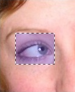
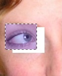

The
Move Tool (Tools-->Move) can move any number of selection regions on the
current layer. Just have a selection region already active using the
Rectangle
or Lasso Selection
Tool, and then click and
drag. That will move the selected region to any new location on the
active layer.
The
Move Tool (Tools-->Move) can move any number of selection regions on the
current layer. Just have a selection region already active using the
Rectangle
or Lasso Selection
Tool, and then click and
drag. That will move the selected region to any new location on the
active layer.

The picture to the left is a region currently selected with the Rectangle Selection Tool.

This is the result of using the Move Tool on the selected region.